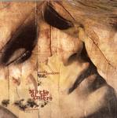

| Artist: | Nicola Randone |
| Title: | Morte Di Un Amore |
| Label: | self produced NR001 |
| Length(s): | 51 minutes |
| Year(s) of release: | 2002 |
| Month of review: | [11/2002] |
| 1) | Visioni | 5.13 |
| 2) | Il Pentimento Di Dio | 4.40 |
| 3) | Tutte Le Mie Stelle | 4.18 |
| 4) | L'Infinito | 3.28 |
| 5) | Un Cieco | 4.38 |
| 6) | La Giostra | 4.51 |
| 7) | Strananoia | 3.59 |
| 8) | Amore Bianco | 4.35 |
| 9) | Morte Di Un Amore | 15.24 |
I like Il Pentimento Di Dio a bit less. The reggae rhythm I guess does not help much. The chorus is a very nice though with brimming organ and the music getting louder and more orchestral. Then it's back to the reggae not forgetting some Gregorian chants giving the song an Enigma feel. Tutte Le Mie Stelle is soft with a good vocal melody and a typical Italian sense of drama. The atmosphere is dark, the rhythms are modern, the strings are mellow. Again, plenty of electronics here.
On L'Infinito we find emotional climaxes over a slow drum. There is more rock here with some particularly strong guitar playing. Plenty of variation here also because the vocals go from flat and indifferent to high and emotional. Un Cieco I hear some early PFM influences. Think Impressione Di Settembre here. The melody is even quite similar.
La Giostra is in my opinion the best song on the album and it is also likely enough the most varied one: spoken voices (in this case mainly Hitler's, lots of lyrics, a beautiful chorus, the song has both dark as well as more orchestral dimensions and even mars rhythms. The ending is surprisingly folky.
Strananoia is a lot lighter, not surprising after a song about Auschwitz. Stop-start rock with speedy vocals. We move into the nylon acousticity of Amore Bianco with modern rhythms and violin. Surprisingly maybe, it does not sound unnatural at all. The guitar solo is a maybe a bit too wee, but the speed up in the middle is well-done.
So we come to the main track of the album, Morte Di Un Amore. The structure is classically oriented and the song has its share of breaks. This is one of the tracks that comes closest to prog, also in length. Again, Randone has included some reggae, but not too overly. The guitar work is rather raw. At times, I was even thinking of progmetal, quite surprising in view of the rest of the album. After a thunderstorm the reversed vocals at the end smell like Hammill.